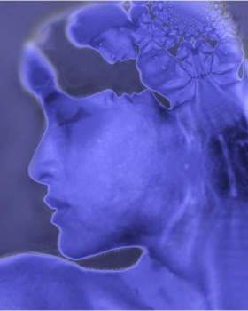
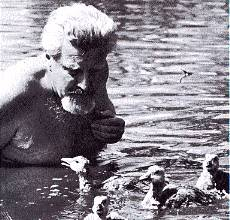
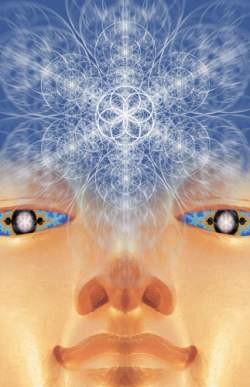

By Paul Hughes
Contrary to popular belief among most brain scientists today, I will argue that free-will not only exists, but ultimately is all that remains in an ever changing uncertain universe. In order to understand the body of my argument, we’ll need to delve into quantum physics, Skinnerian behaviorism, neurological imprinting, brainwashing and metaprogramming.
Here is Robert Anton Wilson’s definition of Von Neumann's Catastrophe of the infinite regress.
A demonstration by Dr.Von Neumann that quantum mechanics entails an infinite regress of measurements before the quantum uncertainty can be removed. That is, any measuring device is itself a quantum system containing uncertainty; a second measuring device, used to monitor the first, contains its own quantum uncertainty; and so on, to infinity. Wigner and others have pointed out that this uncertainty is only terminated by the decision of the observer.
What this means, and has been proven time and again in experiment after experiment, is that without a conscious observer, quantum states remain uncertain and in a state of indeterminacy. It is the conscious observer that makes the uncertainty wave function collapse out of an either/or “maybe” into something "real". No experiment has yet been able to remove this observer from the results. Therefore without consciousness, there is no wave function collapse, and no "reality". Scientists, including Einstein have been fighting this conclusion for more than 70 years, when he said, “God does not play dice”, but experiment after experiment has proven this to be the case. The Aspect Experiment in 1982 and its dozen follow up experiments have reproduced this non-local consciousness dependent result. This is most troubling to determinist materialist as it goes against their training and every other working scientific theory. Yet the power of quantum mechanics has made itself known in almost every field of technology and industry.
So why hasn’t this shattering revelation made greater waves through the scientific community? I honestly don’t have the answer to that, other than history is full of old paradigms dying slow hard deaths. So rigid in their thinking are people and therefore scientists, that as Thomas Kuhn, the author of the book, The Structure of Scientific Revolutions (1962), said, "The triumph of a new paradigm may therefore depend as much on this generation’s dying off as it does on decisive confirmation or refutation, as more traditional philosophies of science understand such things." This is an important point, which I’ll get back to in a bit.
Meanwhile, as our understanding of the brain has increased, we have been able to isolate and tie numerous psychological functions to deterministic brain chemistry. Tweak a molecule here; get a psychological effect there. Apply an electrode there; get a psychological effect here. This has led most neuroscientists and cognitive researchers, including the likes of Francis Crick, to conclude that any conception of having free-will is an illusion. Francis Crick says,
All your joys and your sorrows, your memories and your ambitions, your sense of personal identity and free-will, are in fact no more than the behavior of a vast assembly of nerve cells and their associated molecules.
He is only partially correct, as we shall soon see.
Eastern yogi philosophers and psychonauts have said similar things as Crick. Either through advanced meditative techniques or the ingestion of entheogens, these people have temporarily transcended their neural conditioning and brain programming, and from this higher, more self-aware perspective, have correctly concluded that most of what makes up "them" is arbitrary programming, robotic behavioral patterns inserted either through conditioning or imprinting at certain stages of their life.

So what are imprints? Imprinting was first demonstrated by Konrad Lorenz in the 1930’s when he was able to imprint himself as the mother to hatched ducklings. He discovered that there are moments of imprint vulnerability where an electrochemical bond is formed in neural circuitry that precedes any further conditioning. Another way of looking at this is imprints are hardwired neurological patterns, whereas conditioning is composed of looser, more easily reprogrammed softwired patterns. Conditioning can be changed by positive or negative re-enforcement, but imprints require something altogether more traumatic. We could say that imprints form the basis of our personality and remain unchanged throughout our life, except under the most traumatic of experiences. It is here that the science of brainwashing comes in.
The most notable case of brainwashing is the story of Patti Hearst, who having been kidnapped a "rich daddy’s girl", came back six weeks later as a different person, robbing banks, and proclaiming the birth of a new "peoples liberation". This brainwashing was accomplished through a combination of drugs and extreme trauma. Kept in a locked closet for weeks, taunted by her captors, and fed only the smallest amount of food, Patti went into extreme shock, and in turn become imprint vulnerable. Unbeknownst to her, and after weeks of torment, these same captors befriended her as if they were the ones rescuing her. As they opened the closet door, they immediately started calling her a new name. Loving, comforting, feeding and taking care of her, they gave her a whole new identity and narrative. Claiming that her abductors were working for her father, she immediately came to love and accept these people, her saviors, completely forgetting her old life, and accepting this new reality imprint without question. In short, she was brainwashed.
Ok, so where does free-will come in? So far it seems like I’ve decimated every last shred of free-will and human dignity. Yes, and for good reason! Unless we understand the full extent of just how brainwashed and programmed we are, we will never have anything close to a free-will. To be free it first helps to intimately understand just how imprisoned we are by our own nervous system. Freedom comes from knowledge, not ignorance. To know thyself is the pathway to liberation and freedom, as I will now explain.
Lets start with simple conditioning. An addiction to something would be a good example of strong mental conditioning. Most people who are seriously addicted think they can’t stop their addiction, feeling they are slaves to their nervous system programming, compelling them to get more of whatever it is they are addicted to. We know that addictions can happen at both the psychological level like gambling, or in the physical (central nervous system level), like crack-cocaine. If the person has a strong enough desire to seek adequate help, they can with assistance overcome their addiction. Some people are strong enough to be able to do this without help, but the majority look for others support to get them through the thick of it. Is this desire to overcome their mental conditioning the same as free-will, or just another higher level of programming? Some would argue that there were other programs, super-programs that eventually re-wrote these lower subroutines of addiction. Or what some AI researchers like to call super-goals. Ok, this has some computational basis, but I think it’s a bit of a stretch to describe in adequate neurological terms precisely how overcoming ones programming is not the beginnings of something more uncertain and indeterministic. Remember the indeterminate conscious observer in quantum mechanical systems? We’ll get back to that.
So what are these supergoals then? I think there are many. The next layer beyond conditioning as I mentioned earlier is neurological imprinting; hard-wired electro-chemical bonds that program behavior and our subsequent perception of reality and self. Almost everyone you’ll ever meet has never re-imprinted their nervous systems. However for those lucky or not so lucky individuals who have taken a large quantity of a psychedelic drug, what John Lilly calls metaprogramming agents in his groundbreaking book, Programming and Metaprogramming in The Human Biocomputer, these electro-chemical imprints can be re-programmed, or re-imprinted too. John Lilly described this ability to re-program our programs, meta-programs. He then goes into considerable scientific and rigorous detail describing all the ways we can metaprogram our own brain, changing our brains programming as we see fit.
The question now needs to be asked, if we are nothing more than our programs, imprints and conditioned reflexes, then who is the "we" who is doing the programming? Who is the metaprogrammer? Some might remain steadfast and say that this new higher you is also just a collection of programs, or metaprograms. In either case, for those of us lucky enough to have metaprogammed ourselves and not been metaprogrammed against our will (brainwashing), it sure feels like we are a lot more free than we are ordinarily. Any so-called free-will we have in an ordinary state of consciousness feels contrived and robotic compared to being in a metaprogramming state. So if nothing else, this thing called free-will is relative. There are states where we are more "free" than others.

John Lilly has gone further in exploring the depths of the mind and the limits of metaprogramming, and said that after a while of metaprogramming, you eventually realize there are limits to certain metaprograms, or what he also likes to call beliefs about beliefs. Robert Anton Wilson is fond of calling them catmas... with dogmas being absolute beliefs, and catmas being relativistic metabeliefs. And as you play around with metaprograms, then there is a new "self", the self that is meta-meta-programming! Programming ones own metabeliefs. Or what John Lilly also liked to call supra-meta-beliefs. John Lilly quickly realized there is no limit to this self-recursion when he uttered his most famous quote,
In the province of the mind, what the mind believes to be true, either is true or becomes true within certain limits to be found experientially and experimentally. These limits are further beliefs to be transcended. In the mind there are no limits.
In other words, as you become more aware of your supra-metabeliefs, you can continue upwards to meta-meta-meta-beliefs, ad infinitum… the neurological equivalent of the Von Neumann Catastrophe. If this relative scale of increasing neurological metaprogramming freedom is not some kind of free will, then I think the meaning itself has been destroyed, and for no damn good reason, other than dogmatic stubbornness on the part of people unwilling to let go of an old dying deterministic paradigm, against the new empirically verifiable new paradigm of quantum mechanics. All physical systems are subject to quantum mechanical principles, which are in turn subject to a conscious observer. So no matter how you slice it, the conscious observer is both separate and a part of the physical world. Consciousness it would seem is a fundamental in the universe, possibly the one and only fundamental, preceding all other observed physical properties, which are determined by consciousness.
Quoting Robert Anton Wilson again,
Since all human knowledge is neurological in this sense, every science may be considered a neuro-science; e.g., we have no physics but neurophysics, no psychology but neuropsychology and ultimately, no neurology but neuroneurology. But neuroneurology would itself be known by the nervous system, leading to neuroneuroneurology etc., in an infinite regress.
But as John Lilly humbly admitted, even though in the mind there are no limits, the body on the planetside trip has definite limits locked in by biology. So as long as we return to and operate within it, we are subject to its limits. However each day we are becoming more aware of how these genetic limits work, and soon will figure out how to overcome those limits, first with genetic engineering, then nanoengineering.
So here we are altering our own molecular DNA, and soon the entire physical world down to the atomic level. Another way of looking at this, is DNA having evolved out of the slime, is now becoming recursive enough to begin altering itself with intenationality and purpose towards something stronger, smarter and more versatile. Going further, the atomic world is now becoming aware of itself, and as it becomes aware of these limits, just like we becoming aware of our own programming, will begin to re-program this matter to become more expressive to this internationality, to the logos, the memeplex that is our noosphere. Will this self-recursion ever end? Probably not. Do we have free will? As I have shown, free-will is a matter of degree. It is easily demonstrated that we can increase the levels and degrees of freedom as we become aware of our own limits. I would say, not only is there free-will, but eventually everything in the universe, including the very essence of ourselves will become re-defined by it. In the end, everything will change, but one thing will remain and increase, the level of our free will, our consciousness, the fundamental that is and comprises everything.
From Original Article.